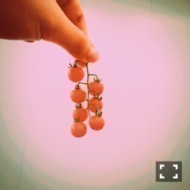

| 2016/06 13 Mon | 斎藤ちはる 46時間って丸2日マイナス2時間なんだね〜これって長いのかな、短いのかな、でも私はあっという間に感じた。皆さんはどうでした？(´>∀<｀)ゝ |
ちはるーむへようこそ！！！
こんばんは！
人狼フェイスこと、斎藤ちはるです。笑
1日目の夜の人狼。
いくちゃんとさゆ♡
わー！！
46時間テレビ、無事完走できましたー！！
ありがとうございましたー！！
前回、46時間全部観たよって方がいらっしゃったけど、今回はどうだろう？？
もしかして今回もまた46時間全部観たっていう勇者がいるのかな( ◦˙ ˙◦ )？！
さすがに46時間は無理だったかもしれないけど
今までにないくらいずっと見続けたよ〜！
って方はいたんじゃないかな？？
いやー、でも本当に、皆さん観てくださってありがとうございました( ;o; )
私はすごく楽しかった！！！
とてつもなく！！！
今回、私の電子台は「斎藤家の4番を完成させよう！」という、とてつもなく内輪ネタをさせていただきました。
斎藤家の歌、4番を募集したらなんと
1800通を超える応募が届いて...！！！
なんて嬉しい。。
100いったらいい方だと勝手に思っていたから。。
やはり1800通を超えると色々な作品が来てました！！
面白いやつ、シュールなやつ、変わってるやつ、深いやつ。。等々。
でも私は、斎藤家の歌というのは
聞いていて心が温かくなる、壮大なものがいいと心の中で決めているので、
そのテーマにぴったりハマったものを選ばせていただきました！！
それが、こちら！！！
「斎藤家の歌」4番
みんな、み、みんな、手を繋ごうよ
この地球から、宇宙(そら)の果てまで
みんな、み、みんな、手を繋いでよ
になりました〜！！
宇宙と書いて、そら、と読むところがお気に入り。
斎藤家の歌も、お年寄りも小さい子どもから随分と壮大になったものです。
本当にたくさんの応募、ありがとうございましたm(_ _)m
電子台の後のメンバーのトーク中も
メンバーが歌ってくれていて嬉しくなりました♡
斎藤家の歌、またどこか披露する機会があれば皆さんに聴かせたいと思います
温かく見守ってくださって、ありがとうございましたm(_ _)m！
衣装は歌のお姉さんを意識したものを
用意していただきました♡
今回もまたいろんな企画があって、
・黒板アート
絵の上手な子を筆頭に書き上げる黒板アートは難しさを感じながらも、みんなで何かを創り上げる達成感を感じました
感動した。。ラスト。。
・ケータリング争奪バトル
3回戦ありましたが、そのうち2回はヤングチーム、最後1回はミドルチームでした！
ヤングチームも楽しかったけど、ミドルチームの結束力も最高でした
ミドルチームで最後優勝できてよかった！！
・踊ってみた選手権
ファンの方のダンスを見る機会ってなかなかないので素敵な時間でした！
わざわざ皆さんが練習してくれて撮影してくれて送ってくれて...
たくさんの手間をかけてくれて本当に嬉しかったです！！
・人狼
1日目も2日目も人狼に参加できたという、さゆ、川後と共に贅沢な人間の1人でした
普段から人狼が大好きで、チームDを筆頭に普段からやっていたので今回参加できてとても嬉しかった♡
1日目1回戦は裏切り者でしたがすぐに追放され
2回戦は人狼になったのですが途中で追放され
2日目1回戦は市民で最後まで残り、見事ずーの人狼を見破り
2回戦は市民でしたがすぐに追放されました。
気づいた方もいるかもしれませんが
何気なく、私全部、勝ったチームにいるんです。笑
裏切り者は人狼チームなので。。
私は本当に地味に運がよろしいです。昔から。
人狼、本当に楽しかったのでまたやりたいな♡
私が参加したのは主にこんな感じでした！
いや、待って。何かあったかもしれないけど
思考が停止していて思い出せないのですので
また何か思い出したらブログに書きますね！
皆さんこの事感想書いて！っていうのがあれば教えてね。
いや〜私たちもバタバタだったけど
見てくださった皆さんも大変だったよね！
体調崩さないように、今日はゆっくり寝てね。
私はいまから寝るよ〜
人狼2日続けてだったからこの時間に寝るのは逆に変な感じだよ〜
写真まだまだあるから
また載せるね！待っててね〜
ででん。急に。

変わったトマト。
可愛いでしょ〜ふふ
おやすみ〜
斎藤ちはる